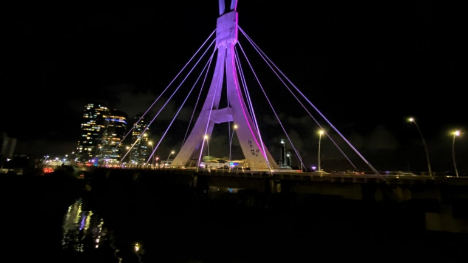
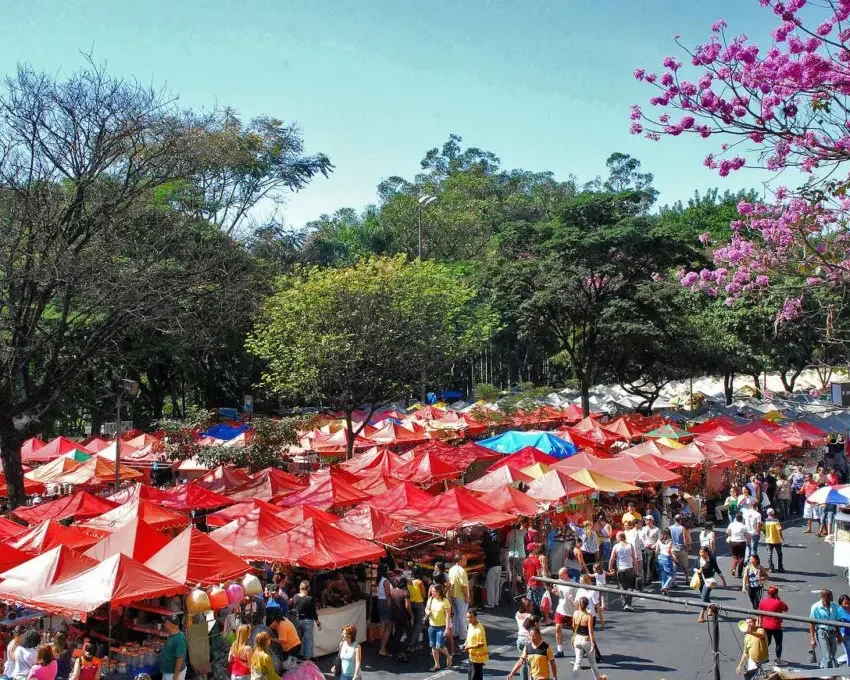
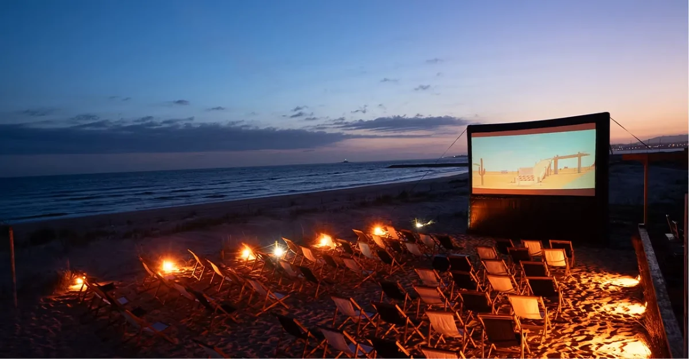

Patrimônios Historicos
Recife é uma cidade encantadora, onde o passado e o presente se misturam em cada esquina. Caminhar por suas ruas é descobrir pontes históricas, casarões coloridos e o reflexo da cultura pernambucana em cada detalhe. Um passeio pelo Recife Antigo revela igrejas seculares, o Marco Zero e a vibrante rua do Bom Jesus, enquanto a brisa do mar e o ritmo do frevo completam a experiência. É um convite para se deixar levar pela beleza, história e alegria dessa cidade única do Nordeste.

Descrição Roteiro
Neste roteiro por Recife, o visitante vivencia o melhor da história e cultura local em três pontos imperdíveis. A primeira parada é o Marco Zero, coração da cidade, onde é possível admirar o encontro do Rio Capibaribe com o mar e os coloridos do Parque das Esculturas. Em seguida, o passeio segue para a Rua do Bom Jesus, uma das mais antigas das Américas, repleta de casarões coloniais, lojinhas de artesanato e o famoso Museu Kahal Zur Israel, a primeira sinagoga das Américas. Por fim, a visita à Embaixada dos Bonecos Gigantes garante diversão e cultura, apresentando de perto os personagens típicos do carnaval pernambucano em um cenário cheio de cores e alegria.
Posts Relacionados
Festival da Lua no Marco Zero
O Marco Zero recebe o encantador Festival da Lua, uma noite de música regional, iluminação artística e apresentações culturais celebrando a beleza da cidade.
Corrida das Pontes – Recife 10K
A tradicional Corrida das Pontes volta às ruas do Recife, reunindo atletas de todas as idades para um percurso que atravessa alguns dos cenários mais emblemáticos da cidade.
Feira Criativa do Poço da Panela
Artesãos locais ocupam as ruas do Poço da Panela com produtos feitos à mão, gastronomia regional e apresentações acústicas.
Mostra de Cinema ao Ar Livre – Praia de Boa Viagem
A Praia de Boa Viagem recebe uma grande tela para exibir filmes pernambucanos ao pôr do sol.
Compartilha em suas redes


X

Comentários
Já visitei essa rua e amei!!
Ótima ideia de passeio, ainda esse ano quero levar minha família